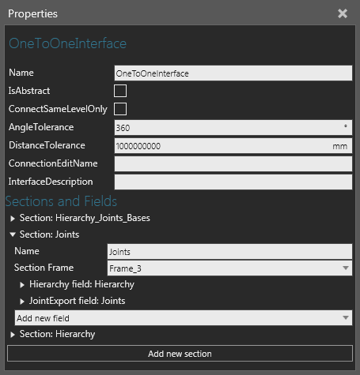

A One to One Interface allows you to establish a connection with another matching interface.

| Name | Description |
| Name | Defines the name of the interface. |
| IsAbstract | Defines the type of connection supported by the interface. A True value supports only remote connections. A False value supports only physical connections. |
| ConnectSameLevelOnly | Defines if the interface can only connect to interfaces on the same level in a hierarchy. Generally, this is used when you are connecting a large group of components that make up an assembly and want to avoid connecting the wrong components, thereby disassembling the group. |
| AngleTolerance | Defines an angle for restricting a physical connection to the interface. Generally, a smaller angle is used to require a front-end connection attempt instead of allowing a component to approach the interface from behind or its side. |
| DistanceTolerance | Defines a distance for restricting a physical connection to the interface. Generally, a smaller distance is used to require connection attempts at a closer proximity to the interface. |
| ConnectionEditName | Defines a Button property for accessing a connection editor. |
| InterfaceDescription | Defines a description about the interface. Generally, this used to leave a note about what and how the interface is used in its component. |
| Sections and Fields | Defines the sections and fields of the interface. A section
is like a plug or socket and its fields are connectors or pins
that allow you to plug in and connect devices. Therefore, the
fields of two interfaces need to match in order to connect with
one another.
Add new section Name Section Frame Add new field Right-corner options
|
An Action field allows you to send and receive actions as well as connect resource clients, providers and managers. Generally, an Action field is used in a remote connection.
Note: Generally, a Python Script is used with Action Containers and Action fields to simulate tasks and processes.
An Attachment field allows you to attach and connect physics objects. Generally, an Attachment field is used to extend Plug and Play by allowing the joints of a component to be attached to other components. In such cases, an Attachment field is visualized as a paper plane which can be dragged to an available connection in the 3D world.
A BaseExport field allows you to import/export base frames. For example, a robot positioner exports base frames to a mounted robot that imports them.
A Flow field allows you to transfer components from one container to another container. For example, most conveyors use Flow fields to simulate material handling between one or more conveyor lines.
A Hierarchy field allows you to attach a node in the component to a node in a different component. The nodes would need to a valid relationship in order to connect to one another. For example, if both nodes are designated as Parent or Child they won't connect. That is, one node would have to be Parent and the other node defined as Child.
An IntegerCompatibility field allows you to restrict a connection if it does not have a matching integer. Generally, an integer is used as a model number to restrict components from connecting to one another if they otherwise could not in the real world.
A JointExport field allows you to import/export joint information. For example, a workpiece positioner exports its joint information to a robot that imports them in order to use external joints.
A Processor field allows you to connect Component Path and Process Point Sensors to path type behaviors. In some cases, a conveyor uses a One to Many Interface to allow for the connection of multiple sensors. In all cases, a detachable sensor is attached to a path using the PnP command. The location of the sensor on the path can be verified in the sensor's Distance property or in the Parent coordinate system. That is, a path is Parent to a sensor which is Child.
A Rsl field allows you to import/export a robot executor's program in order to remotely call subroutines. Generally, an Rsl field is used in a remote connection.
Note: Python Scripts are often used to call subroutines as well as create custom statements in a robot's program, thereby eliminating the need for Rsl fields.
A Signal field allows you to connect and map signals. For example, a Signal field can be used to map a signal to an item in a PLC connection (remote connection) or a signal in a mounted tool to a robot's IO system (physical connection).
A ToolExport field allows you to import/export tool frames. For example, a tool mounted on a robot would export tool frames and the robot would import them to use as a tcp.
A Transport field allows you to send and receive transportation tasks. A Transport Protocol uses a signal to rely information, so a Transport field is used mainly for sharing data (what component to pick up, the pick-up location, the receiving component, the drop-off location).